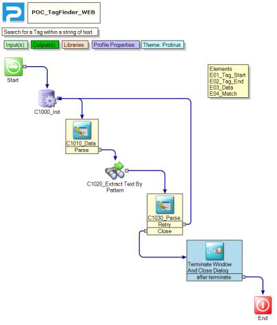

In this article I will show you how to use the 'Extract Text By Pattern' component in the  Forms (Web) Project Type
Forms (Web) Project Type
If you have a need to find a value within string you can use the following:
| Extract Text By Pattern |
|---|
| Class: LogicBase.Components.Default.Process.RegEx.ExtractTextByPattern |
| Library: LogicBase.Components.Default.dll |
| Publisher: Symantec Corporation |
https://www-secure.symantec.com/connect/articles/extract-text-pattern
Example:
{{##_Retry_Tag:25}}
| BEGIN | TAG | END |
|---|---|---|
| {{##_Retry_Tag: | 25 | }} |

This will find the first occurrence.


I created a variable for the Start and End Tag and passed it the data I needed to search in.

If you know the length of the tag, say it’s a GUID you could untick ‘Use Pattern For End’ and hardcode the length. This is similar to how the Email Monitor searches for {IID=} updates in Tickets.

If it doesn’t find a match it continues.
You could then use a ‘Get Number from String’ to check it is a Number or do a Length check to be sure.
Forum
https://www-secure.symantec.com/connect/forums/extracting-text-different-variable-email-body
https://www-secure.symantec.com/connect/forums/string-parsing
https://www-secure.symantec.com/connect/forums/parsing-text-email